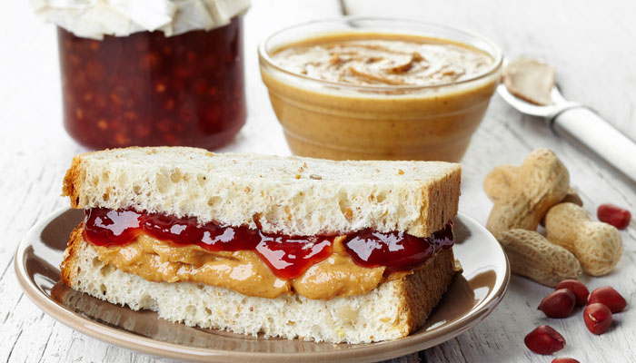

The Perfect PB&J

Description
This peanut butter jelly sandwich is my favorite sandwich. It has the perfect balance of ingredients and looks great when made right.
Ingredients
- 2 slices of white bread
- 1 jar of grape kelly
- 1 jar of creamy peanut butter
- A butter knife
- A sharp knife
- A cutting board
Directions
- Lay both slices of bread next to each other on a cutting board
- With the butter knife, spread 1/8 inch layer of peanut butter on the left side
- On the right side, spread 1/8 inch layer of jelly
- Carefully place the two halves together so that the jelly is on top
- With the sharp knife, carefully cut the sandwich in half.
- Text unreadable
Strawberry Peanut Butter & Honey Sandwich